浏览器版本
本文描述的是以下浏览器版本的行为。我们会随着行为变化更新本文。
| 浏览器引擎 | 测试的浏览器 | 使用该引擎的浏览器 |
|---|---|---|
| Blink | Chrome v146 | Chrome、Edge、Brave、Opera、Vivaldi等。 |
| Firefox v148 | Firefox、Conkeror等。 | |
| WebKit | Safari v26.2 | Safari、iOS浏览器、Yandex、UC Browser等。 |
原则上，日文和中文文本不使用空格字符，不过有时需要增大或减小字符之间的间距，以提高可读性。本文介绍如何使用CSS在特定类型的文本之间添加间隙、缩小标点符号之间的间隙，以及管理段首空白。本文不讨论两端对齐时引入的字符间距变化。
本文不会简单复述规范本身，而是提供面向任务的指导，帮助内容作者实现关键技术。我们假定内容作者知道自己想做什么，本文帮助他们理解该如何实现。
请注意，本文介绍的一些技术仍在开发中，浏览器支持尚未完整。下文会说明在浏览器正确实现CSS规范后应当如何处理，也会说明目前哪些可行、哪些不可行。
本文会用到以下CSS属性。CSS规范链接见endlinks。
letter-spacing: normal | <length-percentage>
text-autospace:normal |
no-autospace |
[ ideograph-alpha || ideograph-numeric || punctuation ]
|| [ insert | replace ]
| auto
text-spacing-trim: auto |
[ normal | trim-both | trim-start | space-first | trim-all | space-all]
text-indent: [ <length-percentage> ] && hanging? && each-line?
hanging-punctuation: none | [ first || [ force-end | allow-end ] || last ]
虽然作者通常会直接从目录跳到所需任务，但下面先简要概述本文涉及功能目前的整体实现状态。
字符间距。 现代浏览器能够可靠支持调整字符之间的间距，包括CJK文本。正字距和负字距在各引擎中的表现一致。
字母或数字短语周围的间距。 当拉丁字母或数字出现在CJK文本中时，浏览器不会自动插入CJK排版中需要的微小间隙。尝试用样式控制这些间隙会得到不一致的结果：Blink和Gecko的行为不同，WebKit只在一侧插入间隙。“replace”行为（即使已有空格也使用统一间距）尚未实现，而且目前一旦指定还会破坏其他行为。
折叠连续标点中的空白。 Blink浏览器默认会折叠相邻标点符号之间过大的间距。Gecko和WebKit不会折叠这些间隙，而通过样式折叠间隙也只在Blink中有效。
折叠行首空白。 Blink会缩小行首或段首开标点前导空白，但结果取决于字体。Gecko和WebKit不会缩小这类空白。
折叠行尾空白。 Blink会缩小行尾闭标点的尾随空白，帮助它在不换行的情况下放入当前行。Gecko和WebKit未实现这一行为。
两端对齐会让文本适配固定宽度，而letter-spacing（也称为tracking，字距调整）是在字母之间添加固定量的空白，最终长度只是其副作用。
不应在字母数字字符串与闭合标点、逗号等之间添加空白。
letter-spacing常用于在字符数多和字符数少的项目之间取得视觉平衡，例如扩展短标题、页眉和图注的宽度。扩展文本时，会在字符框之间加入等量空白。
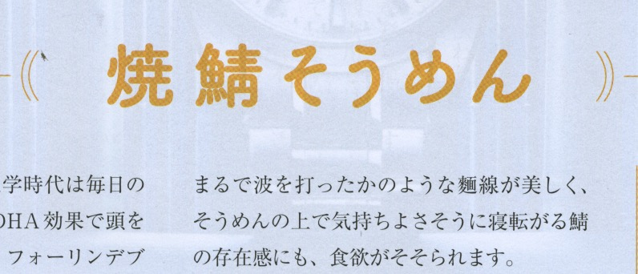
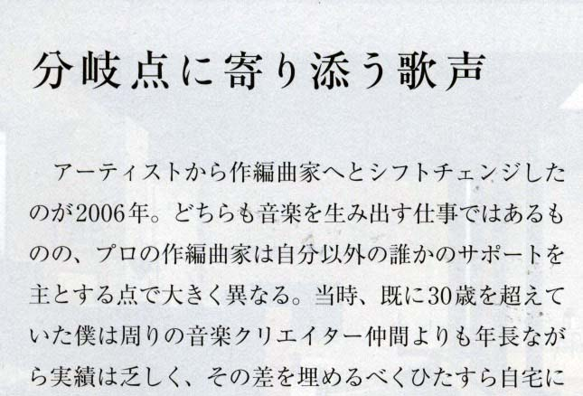
通常，密排文本最有利于阅读；不过在大字号场景中，例如杂志标题，可能需要缩小某些字符之间的距离。这通常通过缩小相邻字面之间的距离来实现。
（虽然通常文本应当紧排，但在某些场景中，普通文本也可能整体设置字符间距，比如在面向某些有学习障碍的读者时。）
如何实现 要在HTML中创建字符间距，可使用CSS的letter-spacing属性，并设置合适的值。该值可以为负，也可以为正。
<h2 style="letter-spacing:.3em;">焼鯖そうめん</h2>
<h2 style="letter-spacing:-.1em;">焼鯖そうめん</h2>你的浏览器中的输出（只有下面两行使用letter-spacing）：
焼鯖そうめん
焼鯖そうめん
焼鯖そうめん
是否有效？ 使用Blink、Gecko和WebKit引擎的浏览器都支持本文所述的letter-spacing用法。
当一段字母数字文本（CSS中定义为非表意字母和非表意数字）出现在日文或中文行内时，通常会用一个小间隙将其与周围的汉字、假名分隔开，以提高可读性。
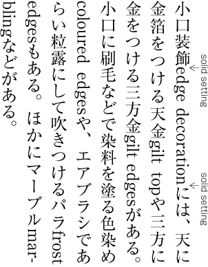
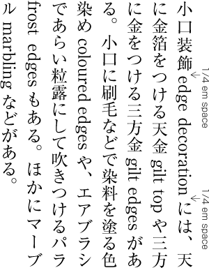
间距大小可能有所不同。《中文排版需求》建议最大可为¼em。《日文排版需求》建议使用¼em，但有时其他宽度也可能合适，例如⅙em。普通的空格字符产生的空白过大，而通过样式插入尺寸正确的间隙则要方便得多。
如果西文前后是已经带有内置空白的标点符号，则不需要这种间距。它也不会出现在行首或行尾。还应注意，自动间距会与letter-spacing叠加，并且也可能受到两端对齐的影响。
如何实现 CSS规范预期浏览器在没有样式的情况下，应当自动在连续表意字符或假名字符与连续字母数字文本之间插入间隙（即normal值）。间隙大小取决于浏览器，不过CSS规范建议使用表意字符宽度的1/8，这在建议的长度中偏小。遗憾的是，目前没有浏览器会在无样式的情况下插入间隙。
原则上，要通过样式实现这一效果，应当可以在样式表中使用CSS text-autospace属性。不要使用空格字符！
text-autospace属性的取值可按如下方式微调结果。
这会产生与组合ideograph-alpha ideograph-numeric（见下文）相同的行为。也就是说，它会在连续表意字符与连续非表意字母或数字之间创建间隙，但只会在没有使用普通空格的位置插入间隙。
撰写本文时，Blink和Gecko浏览器会在字母和数字周围产生间隙。WebKit浏览器会在字母数字文本之前创建小间隙，但不会在其后创建。
这些值通常一起使用。一起使用时，它们会在字母和数字周围创建间隙。
撰写本文时，Blink浏览器不支持这些值。Gecko浏览器在单独使用时支持这些值，但一起使用时不支持。WebKit浏览器会在字母数字文本之前创建小间隙，但不会在之后创建。无论这两个值是否一起使用，情况都是如此。
目前，使用normal值比使用这些单独关键字更稳妥。
CSS可以通过两种方式添加间隙。如果文本中已经包含由普通空格字符产生的间隙，CSS默认只会在没有空格的位置添加间隙。另一方面，如果你想缩小所有基于空格的间隙宽度，并在全文中应用均匀间距，请使用replace值。text-autospace:ideograph-alpha ideograph-numeric replace; 会从显示文本中移除所有空格字符字形（不改变内存中的字符），并用标准宽度的间隙替换；它也会在未使用空格字符的位置创建间隙。
目前三大浏览器引擎都不支持使用replace。实际情况甚至更糟：如果添加replace关键字，Gecko和WebKit浏览器将不再应用它们在没有该关键字时本会产生的间隙。另请注意，replace关键字不能与normal一起使用，这似乎很可惜。（另见相关功能请求。）
text-autospace:no-autospace。是否有效？ text-autospace属性在主流浏览器引擎中仍未互操作实现，而已有的部分实现也存在问题。没有浏览器会在无样式的情况下添加自动间距。尽管如此，现在向CSS样式表添加text-autospace规则可能不会造成任何损害，并且随着实现改进，可能改善文本渲染。（不过目前请去掉replace关键字，因为它会破坏已应用的间距。）
下面的演示包含三个段落。第一个没有样式。第二个只使用normal。第三行添加了replace关键字。“gilt top”的两侧有空格字符。阴影是为了便于读者检查。
:root { text-autospace: normal; }
:root { text-autospace: ideograph-alpha ideograph-numeric replace; }你的浏览器中的输出（只有下面两个段落使用text-autospace）：
小口装飾edge decorationには、天に金箔をつける天金 gilt top や、三方に金をつける3方gilt edgesがある。
小口装飾edge decorationには、天に金箔をつける天金 gilt top や、三方に金をつける3方gilt edgesがある。
小口装飾edge decorationには、天に金箔をつける天金 gilt top や、三方に金をつける3方gilt edgesがある。
原则上，当浏览器完全支持该CSS功能后，由于replace不能与normal关键字配合使用，多数情况下你可能会想使用以下规则：
text-autospace: ideograph-alpha ideograph-numeric replace;
不过，在replace值会阻止其他值生效的现阶段，你大概最好只能这样做：
text-autospace: normal;
（已向CSS工作组提出一个issue，建议replace关键字应当能与normal一起使用。）
句号、逗号、括号等标点通常带有内置空白，因为字形墨迹只占em方框的一部分，而该方框与表意字符或假名字符使用的方框大小相同。不过，在某些情况下，这类标点符号附带的空白并不合适。
如果文本按严格网格排列，则不适用这些空白移除方式。
以下几节介绍如何管理标点符号周围的间隙。
当某些多个标点符号相邻出现时，每个字符的空白部分会累加，应消除这类大间隙，以提高可读性。这里用括号说明这一点，但它适用于多种字符组合。见fig_character_frame。
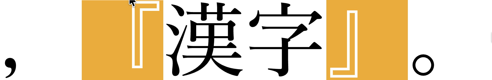
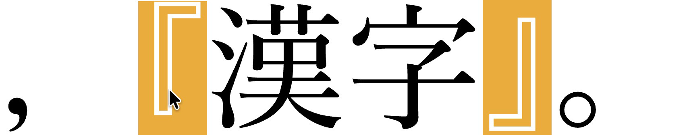
fig_text_space_adjacent展示了真实文本中折叠后的间隙。不应需要为此使用半角字符。你应当使用普通字符，并由应用自动移除适量空白。
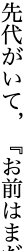
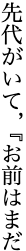
并非所有空白都会被折叠。冒号和分号在横排文本中的空白会被折叠，但这些标点在直排文本中不会折叠空白。问号和叹号无论出现在横排还是直排环境中，都不会折叠空白。哪些字符会缩小宽度、何时缩小以及如何缩小，请参见CSS规范。
如何实现 CSS Text规范提出了一种方法，可以使用CSS text-spacing-trim属性移除标点符号之间多余的间隙。
你可以使用text-spacing-trim:normal告诉浏览器你想这样做，但实际上，该属性的以下附加值也会移除标点簇中的空白：trim-both、space-first、trim-start和trim-all。具体应选择哪个值，取决于你希望如何处理段首空白，后文会讨论这一点。
:root { text-spacing-trim: normal; }你的浏览器中的输出（只有下面一行使用text-spacing-trim）：
先代がいて、「お前はま」。
先代がいて、「お前はま」。
如果出于某种原因想防止空白折叠，可以使用text-spacing-trim:space-all。
是否有效？ 截至撰写本文时，浏览器对text-spacing-trim的支持有限。
Blink浏览器支持使用上述值缩小间隙，但也会默认缩小间隙，不需要样式。
不过，WebKit和Gecko浏览器不会缩小标点符号之间的空白。
本节讨论通常在左侧带有内置空白的标点符号，例如括号「。下面的示例会使用它，不过这也适用于其他标点符号。
当这类标点符号出现在行首时，会有多种可能的处理方式。这些决定通常会受到段落前是否有空行，或段落首行是否缩进的影响。
在段落开头，我们可能希望看到：
不在段首但换行到行首的括号，通常前面不应有空白；不过也可以通过强制使用全角字符来保留该空白。
CSS规范建议使用text-spacing-trim处理这一问题。遗憾的是，Gecko或WebKit浏览器不支持text-spacing-trim。不过，Blink浏览器（如Chrome和Edge）有有限支持。
text-spacing-trim属性有多个可能的取值。每个取值都会影响行首和行尾标点符号的宽度。fig_text_spacing_trim_values提供了概览。作为段落第一个字符的括号前面可以有缩进，也可以没有缩进（缩进由另一个属性设置）。
对于fig_text_spacing_trim_values中的每个取值，图中都显示了三行包含括号的内容。第一行显示段首括号是全角还是半角。第二行左侧显示行内括号换到新行时的样子。第二行右侧的半角图形表示，当行尾只有半角间隙可用时，闭括号可以缩小以适配。第三行显示段末括号在其后有足够空间显示全角字形时的预期宽度。
| normal | 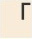 .............................................................................. 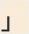 或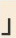 ............ |
段首括号为全角。 换到行首的行内括号为全角。 行尾闭括号可以缩小以适配。 段末闭括号在有可用空间时为全角。 |
| trim-both | 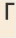 ...................................................................................................... ............ |
段首括号为半角。 换到行首的行内括号为半角。 行尾闭括号始终为半角。 |
| trim-start | ...................................................... ................................ 或 ............ |
段首括号为半角。 换到行首的行内括号为半角。 行尾闭括号可以缩小以适配。 段末闭括号在有可用空间时为全角。 |
| space-first | ................................................... ................................. 或 ............ |
段首括号为全角。 换到行首的行内括号为半角。 行尾闭括号可以缩小以适配。 段末闭括号在有可用空间时为全角。 |
| trim-all | ......................................................... ............................................. ............ |
段首括号为半角。 换到行首的行内括号为半角。 行尾闭括号始终为半角。 这会让标点（包括间隔号）在任何出现位置都使用半角字形，而不只是行首/行尾。 |
| space-all | ................................................... ....................................... ............ |
段首括号为全角。 换到行首的行内括号为全角。 行尾闭括号始终为全角。 这会让标点在任何出现位置都使用全角字形，而不只是行首/行尾。 |
text-spacing-trim属性的取值，以及它们对行首和行尾括号的影响。（已在CSS仓库中提出一个issue，建议让内容作者能够分别设置上述各项行为，而不是使用只覆盖特定组合的关键字，这样会更简单。）
下文会看到，我们希望实现的一些行为目前存在于Blink引擎浏览器中，例如Chrome、Edge、Brave等。不过需要注意的是，能否成功取决于所用字体。
CSS规范指出，浏览器可能依赖OpenType特性来裁剪相关字形。
下表显示哪些macOS和Noto字体支持裁剪前导空白，哪些不支持（在Blink浏览器中）。
| 日文 | 简体中文 | 繁体中文 | |||
|---|---|---|---|---|---|
| ✅ |
❌ | ✅ | ❌ | ✅ | ❌ |
|
Hiragino Mincho Pro Noto Serif CJK JP Toppan Bunkyu Mincho YuMincho Hiragino Kaku Gothic Pro Hiragino Sans Osaka Toppan Bunkyu Gothic Noto Sans CJK JP YuGothic Arial Unicode MS Hiragino Maru Gothic Pro Tsukushi A Round Gothic Tsukushi B Round Gothic Toppan Bunkyu Midashi Gothic YuKyokasho YuKyokasho Yoko |
— | Noto Serif CJK SC Noto Sans CJK SC PingFang SC |
SimSong Songti SC STSong Hei Heiti SC Lantinghei SC STHeiti Yuanti SC STFangsong Kai Kaiti SC STKaiti Xingkai SC Baoli SC Hannotate SC HanziPen SC Libian SC Wawati SC Weibei SC Yuppy SC |
Noto Serif CJK TC Noto Sans CJK TC PingFang HK PingFang TC PingFang MO Hiragino Sans TC |
Apple LiSung LiSong Pro Songti TC Nom Na Tong Apple LiGothic Heiti TC Lantinghei TC LiHei Pro Yuanti TC BiaukaiTC BiaukaiHK Kaiti TC Xingkai TC Baoli TC Hannotate TC HanziPen TC Libian TC Wawati TC Weibei TC Yuppy TC |
以上结果来自横排文本显示。某些字体（如PingFang TC）在横排文本中支持预期行为，但在直排文本中不支持。还应注意字体是否支持你想使用的括号字形：例如，Hiragino Sans TC字体似乎不支持 〖 括号（虽然它支持 【 括号），如果同时使用该括号和该字体，可能会看到意外失败。
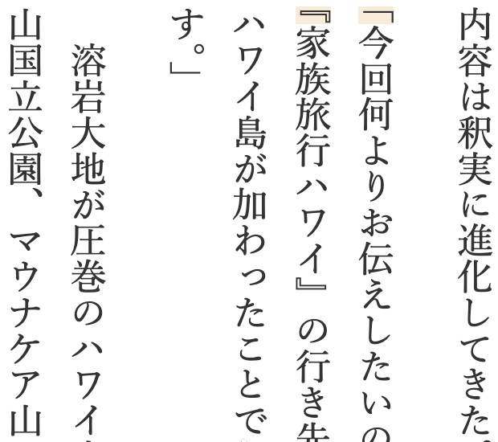
当段落由空行分隔时，段落首行通常不缩进。此时，如果段落以开始括号开始，通常会移除其前的半角空白。
为此，应当可以使用text-spacing-trim，并将值设为trim-start或trim-both。这些值应当移除括号的前导空白，无论括号位于段首，还是位于段落内部但换到新行行首。
trim-start和trim-both的区别在于，前者只裁剪开始括号，而后者还会裁剪行尾的闭括号。
:root { text-spacing-trim: trim-start; }
p { margin-block: 1em; }你的浏览器中的输出（调整行长，使两个开始括号都出现在行首。）
漢字漢字漢字漢字漢字漢字漢字。
「漢字漢字漢字漢字漢字漢字漢字漢漢字。」
漢字漢字漢字漢字漢『漢字漢字漢字漢字漢字』漢字漢字。
漢字漢字漢字漢字漢字漢字，漢字漢字。
是否有效？ Blink浏览器支持trim-start值，但不支持trim-both。Gecko或WebKit浏览器均不支持这两个值。
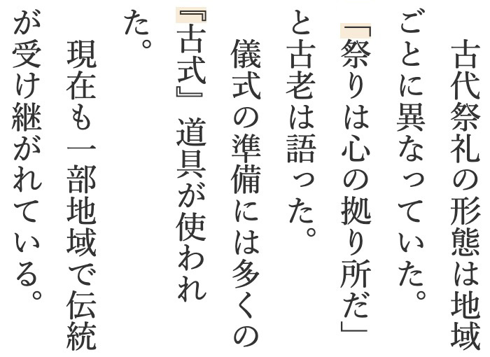
日文文本的一种常见排法是移除段落之间的间隙，并让每个段落以1em缩进开始。当开始括号出现在段落首行开头时，它会占据该缩进的右半部分（或下半部分）。从视觉上可以将其理解为一个全角字符替代了缩进，也可以理解为半角括号“悬挂”在实际行首的左侧/上方。
对于这种排法，CSS规范建议使用下面框中所示规则。text-indent属性为所有段落应用缩进。text-spacing-trim行移除括号的前导空白。然后hanging-punctuation行将括号移入缩进空间。
p {
margin-block: 0;
text-indent: 1em;
text-spacing-trim: trim-both;
hanging-punctuation: first;
}你的浏览器中的输出（调整行长，使两个开始括号都出现在行首。）
漢字漢字漢字漢字漢字漢字漢字。
「漢字漢字漢字漢字漢字漢字漢字漢漢字。」
漢字漢字漢字漢字『漢字漢字漢字漢字漢字』漢字漢字。
漢字漢字漢字漢字漢字漢字，漢字漢字。
是否有效？ 遗憾的是，目前Blink或Gecko浏览器无法实现这种方法，因为它们不支持hanging-punctuation属性。
WebKit浏览器支持hanging-punctuation:first，段落开头的括号看起来符合预期。不过，WebKit浏览器不会移除段落内部换到行首的括号前的半角空白。
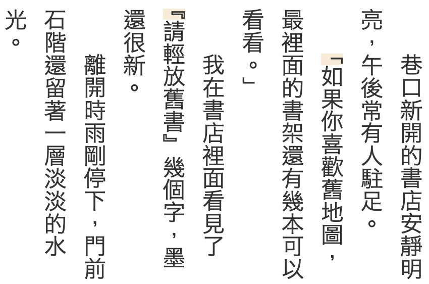
上图显示了首行缩进的中文段落。中文常见的缩进为2em。括号的前导空白被移除，但与前面的日文示例不同，括号不会悬挂在缩进空间中。
以下CSS应当能实现这一效果。text-indent属性同样为所有段落应用缩进（但这次是2em间隙）。然后text-spacing-trim行移除括号的前导空白。
p {
margin: 0;
text-indent: 2em;
text-spacing-trim: trim-start;
}你的浏览器中的输出（调整行长，使两个开始括号都出现在行首。）
漢字漢字漢字漢字漢字漢字漢字。
「漢字漢字漢字漢字漢字漢字漢字漢字漢字。」
漢字漢字漢字漢字『漢字漢字漢字漢字漢字』漢字漢字。
漢字漢字漢字漢字漢字漢字，漢字漢字。
是否有效？ 在上面的测试中，我们使用trim-start值，只是因为它在Blink浏览器中有效。理想情况下，你也应当能使用trim-both。
这种方法在Blink浏览器中有效，但在Gecko和WebKit浏览器中，括号宽度不会缩小，这会在段首括号前产生2½个空格。后两个引擎当然也无法移除换到新行行首的行内括号前导空白。
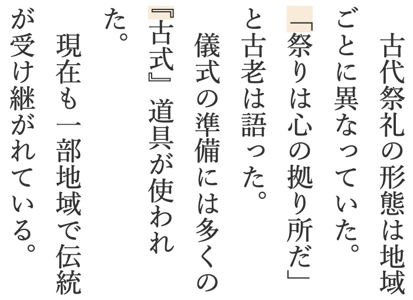
许多现有内容，尤其是ePub文档，是在CSS处理段首标点问题之前创建的。因此，常见做法是在大多数段落首行前使用一个表意空格字符，但在需要时改用全角括号字形。这会产生上面悬挂示例中看到的括号前半角空白。它看起来相同，但通过字符而不是样式实现。
text-spacing-trim的space-first值就是为便于这种排法而设计的。我们仍然希望换到新行的行内括号为半角，但要确保段首括号保持全角（不同于使用trim-start时）。不需要text-indent属性或hanging-punctuation属性。
p {
margin-block: 0;
text-spacing-trim: space-first;
}你的浏览器中的输出（调整行长，使两个开始括号都出现在行首。）
漢字漢字漢字漢字漢字漢字漢字。
「漢字漢字漢字漢字漢字漢字漢字漢漢字。」
漢字漢字漢字漢字『漢字漢字漢字漢字漢字』漢字漢字。
漢字漢字漢字漢字漢字漢字，漢字漢字。
是否有效？ Blink浏览器支持该值。Gecko和WebKit浏览器对段首括号没有问题（因为没有应用样式），但尚未实现该值，这意味着换到新行的括号会保持全角。
台湾内容作者可能更倾向于使用space-all。除了让行首和行尾保持全角字形外，space-all还会禁止相邻行内标点之间的空白折叠（见punctuation_sequences）。
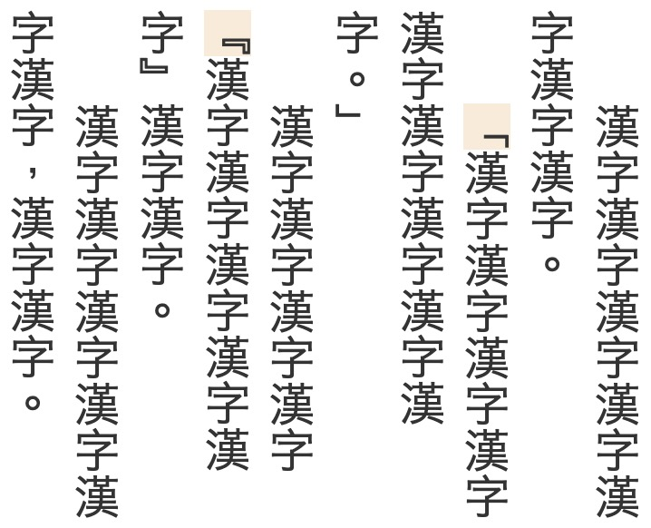
其他值normal和trim-all会产生fig_text_spacing_trim_values所示的效果。
trim-all会在所有地方裁剪带有可折叠空白的括号和其他标点的宽度，不只是行首和行尾。这正是trim-all与trim-both的区别。
trim-both会裁掉行首和行尾的多余空白，但保留行内空白。例如：
相比之下，trim-all会裁掉所有位置的多余空白。例如：
考虑行尾标点时，我们想知道：当行尾只剩足够容纳半角字符的空间时，闭括号或其他带有尾随空白的标点是否会自动移除该空白。如果只有一个半角字符的间隙，而标点仍保持全角，它就会换到下一行，并带走前一个字符（因为闭括号不应出现在行首）。
除space-all值外，所有text-spacing-trim取值都会自动缩小行尾闭括号的宽度。多数情况下，如果行尾有足够空间容纳全角括号，括号会保持全角。但是，如果行尾只有半角间隙，则括号会缩小。不过，trim-both和trim-all这两个值始终会缩小行尾括号的宽度，无论是否有空间容纳全角字形。
如果你想对齐文本，使行尾闭括号与相邻行字符末端齐平，需要选择一个会强制行尾括号为半角的text-spacing-trim值。为此，trim-both比trim-start更合适，因为后者可能会在行尾放置全角字形。
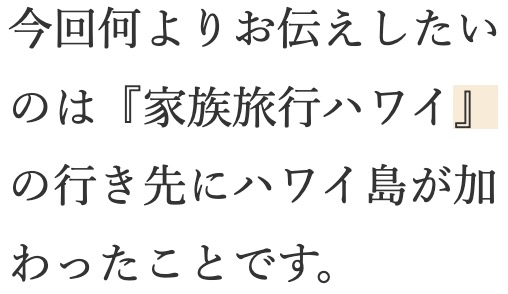
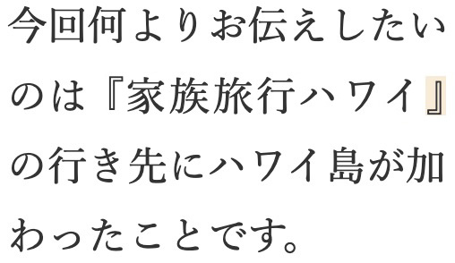
trim-start对齐的括号结尾行，右侧为使用trim-both齐平对齐的同一行。本文描述的是以下浏览器版本的行为。我们会随着行为变化更新本文。
| 浏览器引擎 | 测试的浏览器 | 使用该引擎的浏览器 |
|---|---|---|
| Blink | Chrome v146 | Chrome、Edge、Brave、Opera、Vivaldi等。 |
| Firefox v148 | Firefox、Conkeror等。 | |
| WebKit | Safari v26.2 | Safari、iOS浏览器、Yandex、UC Browser等。 |
编写网页
语言支持索引
CSS规范
MDN